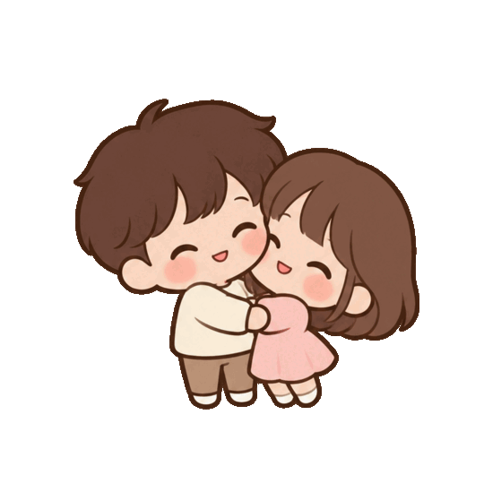

วันนี้เป็นวันของเราสองคน
มีเธอแล้ว
ใจฟูจัง ♡ครบ 1 เดือน
แล้วนะ!
ใจฟูจัง ♡ครบ 1 เดือน
แล้วนะ!
หนึ่งเดือนที่มีเธอ
เธอคือความสดใส
ของเค้าเสมอเลย
ขอบคุณที่ทำให้วันธรรมดา น่ารักขึ้นตั้งเยอะ
มีของเล็ก ๆ ตั้งใจทำมาให้… เปิดดูด้วยกันนะ
ทำด้วยหัวใจ ให้เธอคนเดียว
เพลงของเค้าเปิดฟังไปด้วยกันนะ ♡
01 — เรื่องที่อยากบอก
สามเหตุผลเล็ก ๆ
ที่ทำให้เค้าชอบเธอมากขึ้นทุกวัน
แตะการ์ดดูสิ เค้าซ่อนความในใจไว้ให้
02 — จดหมายจากหัวใจ
บางคำ…
อยากเก็บไว้ให้เธออ่าน
อาจไม่ใช่คนพูดเก่งที่สุด
แต่ทุกคำในนี้ เค้าตั้งใจให้เธอนะ
03 — ความในใจอีกนิด
ถ้าวันนี้อยากได้กำลังใจ
เค้ามีให้เธอนะ
เธอไม่ต้องเก่งตลอดเวลาก็ได้
อยู่ตรงนี้ เป็นตัวเองได้เต็มที่เลยนะ
ทุกข้อความตั้งใจส่งให้เธอ
04 — เซอร์ไพรส์ที่ซ่อนไว้
เก็บหัวใจให้ครบ
มีความลับอยากบอกเธอ
แตะหัวใจทั้ง 5 ดวง ไม่ต้องรีบนะ
เก็บแล้ว 0 / 5 ดวง
ความลับก็คือ…
ถ้าให้เลือกคนโปรดอีกกี่ครั้ง
เค้าก็ยังเลือกเธออยู่ดี ♡
1 เดือนของเราคนเรื่องราวของเค้า

ขอกอดเธอแบบนี้ไปนาน ๆ เลยนะ ♡เรื่องราวของเค้า
เพิ่งเริ่มต้นเองนะ
อยากมีเธออยู่ในเดือนต่อ ๆ ไป
อยากสะสมรอยยิ้มด้วยกันอีกเยอะ ๆ เลย